⏹ Arendal (3)
The GRID-Arendal Maps & Graphics Library is an on-going project to collect and catalogue all graphic
products that have been prepared for publications and web-sites from the last 15 years in a wide range of
themes related to environment and sustainable development.
| arctic🔻 |
temperature🔻 |
zambesi🔻 |
|
|
|
⏹ Cividis (1)
The cividis colormap, designed to give the most accurate perception of scientific data by as many viewers
as possible. The “authors:” J. R. Nuñez, C. R. Anderton and R. S. Renslow give details on the design and
motivation in their 2016 article, Optimizing colormaps with consideration for color vision deficiency to
enable accurate interpretation of scientific data. PLoS ONE 13(7) (doi).
⏹ Cmocean (22)
Kristen M. Thyng of Texas A&M University's Department of Oceanography has developed this collection of
colour-palettes for commonly-used oceanographic variables.
Detailed notes on the design of the palettes and their motivation can be found on the project page for the
matplotlib package for cmocean, or in the paper Thyng, K.M., Greene, C.A., Hetland, R.D., Zimmerle, H.M., &
DiMarco, S.F. True colors of oceanography Oceanography, 29(3), 9–13, 2016 (available here).
| curl🔻 |
deep🔻 |
delta🔻 |
| |
 |
|
| oxi🔻 |
phase🔻 |
rain🔻 |
| |
|
 |
| turbid🔻 |
|
|
| |
 |
|
⏹ Em (1)
A palette by Erika Mackay of the New Zealand National Institute of Water & Atmospheric Research.
⏹ ESRI (17)
The Color Ramps Version 2.0 collection of cartographic and geospatial gradients from GIS specialists, ESRI.
| effects_park_boundary_1🔻 |
effects_park_gradation_1🔻 |
events_current_dir_3🔻 |
| |
|
 |
| events_current_dir_4🔻 |
events_desertification_5🔻 |
events_dry_wet_4🔻 |
| |
|
|
| events_fire_active_1🔻 |
events_fire_active_2🔻 |
events_global_warming🔻 |
| |
|
|
| hillshade_illumination🔻 |
hypsometry_bath_bath_111🔻 |
hypsometry_bath_bath_112🔻 |
| |
|
|
| hypsometry_bath_bath_113🔻 |
hypsometry_bath_bath_114🔻 |
hypsometry_bath_bath_115🔻 |
| |
|
|
| hypsometry_planet_mars_1🔻 |
hypsometry_planet_mars_2🔻 |
| |
|
⏹ Gery (1)
A scheme for amplitude values from seismic data, created with GMT from a grid file of amplitude values from
a SEG-Y file.
⏹ Gist (6)
These palettes are from the Yorick scientific visalisation package, an evolution of the GIST package, both
by David H. Munro.
| earth |
gray🔻 |
heat🔻 |
| |
|
|
| ncar🔻 |
rainbow🔻 |
stern🔻 |
| |
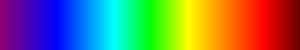 |
|
⏹ Gmt (30)
The palettes distributed with the Generic Mapping Tools (GMT).
| GMT_abyss🔻 |
GMT_bathy🔻 |
GMT_cool🔻 |
| |
|
 |
| GMT_cubhelix🔻 |
GMT_dem1🔻 |
GMT_dem2🔻 |
| |
|
|
| GMT_dem3🔻 |
GMT_dem4🔻 |
GMT_drywet🔻 |
 |
|
|
| GMT_elevation🔻 |
GMT_gebco🔻 |
GMT_globe🔻 |
| |
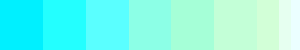 |
|
| GMT_haxby🔻 |
GMT_hot🔻 |
GMT_ibcso🔻 |
| 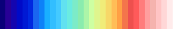 |
|
|
| GMT_jet🔻 |
GMT_nighttime🔻 |
GMT_no_green🔻 |
| 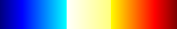 |
 |
|
| GMT_ocean🔻 |
GMT_panoply🔻 |
GMT_polar🔻 |
| |
|
|
| GMT_rainbow🔻 |
GMT_red2green🔻 |
GMT_relief🔻 |
| |
|
|
| GMT_seafloor🔻 |
GMT_sealand🔻 |
GMT_seis🔻 |
| |
|
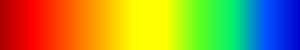 |
| GMT_split🔻 |
GMT_topo🔻 |
GMT_wysiwyg🔻 |
| |
|
|
⏹ GRASS (27)
The colour ramps distributed with the GRASS GIS. The original gradients can be found here.
| aspect🔻 |
aspectcolr🔻 |
bcyr🔻 |
| |
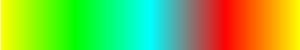 |
|
| bgyr |
byg |
byr🔻 |
| 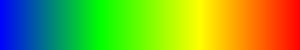 |
|
|
| celsius🔻 |
differences🔻 |
elevation🔻 |
| |
|
|
| etopo2🔻 |
evi🔻 |
gdd🔻 |
| |
|
|
| gyr🔻 |
haxby🔻 |
ndvi🔻 |
| |
|
|
| precipitation_monthly🔻 |
precipitation🔻 |
rainbow🔻 |
| |
|
|
| ramp🔻 |
rstcurv🔻 |
ryb🔻 |
| |
|
|
| ryg🔻 |
sepia🔻 |
slope🔻 |
| |
|
|
| srtm🔻 |
terrain🔻 |
wave🔻 |
| |
|
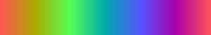 |
⏹ H5 (15)
The h5utils package by MIT's Steven G. Johnson is a set of utilities for visualization and conversion of
scientific data in the free, portable HDF5 format. Included in the package are a set of colour tables for
the h5topng program.
| Autumn🔻 |
Bluered🔻 |
Bone🔻 |
| |
|
|
| Cool🔻 |
Cooper🔻 |
dkbluered🔻 |
| |
|
 |
| Green🔻 |
Hot🔻 |
Hsv🔻 |
| |
|
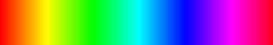 |
| Jet🔻 |
Pink🔻 |
Spring🔻 |
| |
|
|
| Summer🔻 |
Winter🔻 |
Yellow🔻 |
| |
 |
|
⏹ Heine (1)
Christian Heine of the University of Sydney's EarthByte group, curates a collection of colour palettes for
geological time.
⏹ ibcso (2)
The bathymetric scheme used by IBCSO: the International Bathymetric Chart of the Southern Ocean. The scheme
was kindly provided by Jan Erik Arndt, Scientific Editor of IBCSO. The bath variant excludes the
constant-white topography band, but is otherwise identical.
⏹ imagej (33)
ImageJ is a public domain Java image processing program inspired by NIH Image for the Macintosh. It runs,
either as an online applet or as a downloadable application, on any computer with a Java 1.4 or later
virtual machine. Downloadable distributions are available for Windows, Mac OS, Mac OS X and Linux.
| 001_fire🔻 |
002_spectrum🔻 |
003_ice🔻 |
| |
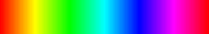 |
|
| 004_phase🔻 |
16_colors🔻 |
16_equal🔻 |
| |
|
|
| 20_colors🔻 |
amber🔻 |
auxctq🔻 |
| |
|
|
| blue_orange🔻 |
brain🔻 |
cequal🔻 |
| |
|
|
| cmy_yellow🔻 |
cold🔻 |
gem_256🔻 |
| |
|
 |
| neon_blue🔻 |
neon_green🔻 |
neon_magenta🔻 |
| |
 |
|
| neon_red🔻 |
rgb_blue🔻 |
rgb_green🔻 |
| |
|
|
| smart🔻 |
topography🔻 |
unionjack🔻 |
| |
|
|
⏹ jjg (112)
Palettes mainly for technical illustration.
| ccolo_alpen_natural_light🔻 |
ccolo_alpen_road_spray🔻 |
ccolo_alpen_zone_out🔻 |
| |
|
|
| ccolo_angelafaye_Coloured_sky_in🔻 |
ccolo_angelafaye_Mt_Fuji_Sumie🔻 |
ccolo_angelafaye_scent_of_spring🔻 |
| |
|
|
| ccolo_angelafaye_soothe_my_mind🔻 |
ccolo_angelafaye_The_Calanques🔻 |
ccolo_Bionic_Blender_Aphalara_Itadori🔻 |
| |
|
|
| ccolo_Bionic_Blender_Bad_Kitten🔻 |
ccolo_Bionic_Blender_Death_Top_Work_Shop🔻 |
ccolo_Bionic_Blender_Drunken_Cow_Woman🔻 |
| |
|
|
| ccolo_Bionic_Blender_IE_havefun🔻 |
ccolo_drumma_Asura🔻 |
ccolo_drumma_Buddha🔻 |
| |
|
|
| ccolo_drumma_Debdebe🔻 |
ccolo_drumma_Disap_Pointedly🔻 |
ccolo_drumma_Karantina🔻 |
| |
|
|
| ccolo_drumma_MOS_6581🔻 |
ccolo_drumma_Opaque🔻 |
ccolo_drumma_Photosynthesis🔻 |
| |
|
|
| ccolo_drumma_Totoro🔻 |
ccolo_electroluv_Beat_Around_The_Bush🔻 |
ccolo_electroluv_Everglowing_Wonder🔻 |
| |
|
|
| ccolo_drumma_Totoro🔻 |
ccolo_electroluv_Beat_Around_The_Bush🔻 |
ccolo_electroluv_Everglowing_Wonder🔻 |
| |
|
|
| ccolo_electroluv_iCreate🔻 |
ccolo_electroluv_Justified_Reasons🔻 |
ccolo_electroluv_My_Resolute_Heart🔻 |
| |
|
|
| ccolo_electroluv_Run_Away_Tonight🔻 |
ccolo_electroluv_seashells🔻 |
colo_electroluv_solaris🔻 |
| |
|
|
| ccolo_hana_Amikka🔻 |
ccolo_hana_dammar🔻 |
ccolo_hana_Haiku🔻 |
| |
|
|
| ccolo_hana_naturally🔻 |
ccolo_hana_rainy🔻 |
ccolo_hana_Sea🔻 |
| |
|
|
| ccolo_hana_September.svg🔻 |
ccolo_hana_Sugar🔻 |
ccolo_phill_bad_moon_rising🔻 |
| |
|
|
| ccolo_phill_moldy_bread🔻 |
ccolo_Skyblue2u_Adrift_in_Dreams🔻 |
ccolo_Skyblue2u_Deep_Skyblues🔻 |
| |
|
|
| ccolo_Skyblue2u_Adrift_in_Dreams.svg🔻 |
ccolo_Skyblue2u_Deep_Skyblues🔻 |
ccolo_Skyblue2u_Gentle_Waves🔻 |
| |
|
|
| ccolo_Skyblue2u_Adrift_in_Dreams🔻 |
ccolo_Skyblue2u_Deep_Skyblues🔻 |
ccolo_Skyblue2u_Gentle_Waves🔻 |
| |
|
|
| ccolo_Skyblue2u_mellon_ball_surprise🔻 |
ccolo_vredeling_After_Eight🔻 |
ccolo_vredeling_Another_Earth🔻 |
| |
|
|
| ccolo_vredeling_Black_Hole_Sun🔻 |
ccolo_vredeling_British_Cheer🔻 |
ccolo_vredeling_Cafe_88_Cafe🔻 |
| |
|
|
| ccolo_vredeling_CHIC_Painted_Skies🔻 |
ccolo_vredeling_Dulled🔻 |
ccolo_vredeling_Grand_Boucle🔻 |
| |
|
|
| ccolo_vredeling_Lucy_in_the_Sky🔻 |
ccolo_vredeling_Mare_Nostrum🔻 |
ccolo_vredeling_Misty_Morning🔻 |
 |
|
|
| ccolo_vredeling_Office_Space🔻 |
ccolo_vredeling_OK_Computer🔻 |
ccolo_vredeling_Optimus_Prime🔻 |
| |
|
|
| ccolo_vredeling_Rationality🔻 |
ccolo_vredeling_Schindlers_List🔻 |
ccolo_vredeling_Sleep_Deprevation🔻 |
| |
|
|
| ccolo_vredeling_Super_Gran🔻 |
ccolo_vredeling_Tubular_Bells🔻 |
misc_rainfall🔻 |
| |
|
|
| misc_seminf_haxby🔻 |
misc_subtle🔻 |
misc_temperature🔻 |
| |
|
|
| misc_virus🔻 |
misc_voxpop🔻 |
physics_bbrad🔻 |
| |
|
|
| physics_visspec🔻 |
| 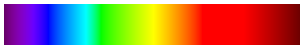 |
⏹ jm(1)
The ShadeMax palettes by Jim Mossman; nine stunning sets of discrete cartographic palettes for a range of
terrains. Each set consists of 5 variants: (a) Base Color, (b) Sunny-Legend, (c) Shady-Legend, (d)
SA/3D-Bright and (e) 3D-Counterpart.
⏹ ma(1)
Gradients for anime and romance, by Michele Albert (Michelle Jerott) of AbsoluteTrouble. The original Paint
Shop Pro gradients can be found here.
| ma_gray_grayscale02🔻 |
 |
⏹ mby(1)
A topographic-bathymetric scheme by M. Burak YIKILMAZ of the UC Davis Department of Geology, used in the
astonishing augmented reality sandbox by Oliver Kreylos and Peter Gold, also of UC Davis.
⏹ mpl(3)
Matplotlib is a Python 2D plotting library which produces publication quality figures in a variety of
hardcopy formats and interactive environments across platforms.
Version 2.2 of the library includes these perceptually uniform sequential colour-maps by Nathaniel J. Smith,
Stefan van der Walt, and (in the case of viridis) Eric Firing. Details on the motivation and production of
the maps can be found in this note.
| inferno🔻 |
magma🔻 |
plasma🔻 |
| |
|
 |
| viridis🔻 |
| |
⏹ ncl(40)
The NCL (NCAR Command Language) is an open-source interpreted language designed specifically for scientific
data analysis and visualisation.The source package includes a number of colour-tables, translated into
discrete (piecewise constant) gradients.
| amwg🔻 |
Cat12🔻 |
cosam🔻 |
| |
|
|
| cosam12🔻 |
hotcold_18lev🔻 |
hotcolr_19lev🔻 |
| |
|
|
| mch_default🔻 |
nrl_sirkes_nowhite🔻 |
nrl_sirkes🔻 |
| |
|
|
| OceanLakeLandSnow🔻 |
perc2_9lev🔻 |
percent_11lev🔻 |
| |
|
|
| precip_diff_12lev🔻 |
precip2_15lev🔻 |
precip2_17lev🔻 |
| |
|
|
| precip3_16lev🔻 |
precip4_11lev🔻 |
precip4_diff_19lev🔻 |
| |
|
|
| radar🔻 |
rh_19lev🔻 |
spread_15lev🔻 |
| |
|
|
| StepSeq25🔻 |
sunshine_9lev🔻 |
sunshine_diff_12lev🔻 |
| |
|
|
| t2m_29lev🔻 |
tbr_240_300🔻 |
tbr_stdev_0_30🔻 |
| |
|
|
| tbr_var_0_500🔻 |
tbr_tbrAvg1🔻 |
tbr_tbrStd1🔻 |
| |
 |
|
| tbrVar1🔻 |
temp_19lev🔻 |
temp_diff_18lev🔻 |
| |
|
|
| temp_diff_1lev🔻 |
topo_15lev🔻 |
wgne15🔻 |
| |
|
|
| wind_17lev🔻 |
| |
⏹ OceanColor (4)
The gradients from NASA's OceanColor site, designed for global maps of ocean chlorophyll levels, surface
temperature and other parameters.The original colour scales can be downloaded here in a plain ASCII format.
| ndvi🔻 |
rainbow🔻 |
sst🔻 |
| |
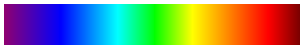 |
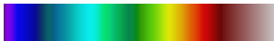 |
| zeu🔻 |
| |
⏹ pn(1)
A colour-ramp for the 1:1,470,000 map depicting the landing site of Apollo 11 on the Moon, by Paul Naylor
for the Ordnance Survey, Great Britain's national mapping agency.
Paul Naylar writes:
The moon's terrain would be depicted by a hillshade created from a Digital Elevation Model captured by NASA
and JAXA's SELENE/Kaguya team. I wanted to then colour this hillshade using a palette that best captured the
satellite's many peaks, craters and troughs, exposing them in all their glory.
It wasn't easy, but eventually I was inspired by Jordi Delpeix Borrell's winning photograph for Astronomy
Photographer of the Year 2018 which I discovered on the BBC website. I think the use of yellows and blues
captures the satellite's topography nicely with the yellows depicting higher areas of terrain whilst blues
depict lower.
⏹ rc(40)
Restless Concepts
Gradients from Restless Concepts, graphics designers.
| aquamarinemermaid🔻 |
autumnrose🔻 |
blackhorse🔻 |
| |
|
|
| bluefly🔻 |
butterflyfairy🔻 |
butterflyfairy🔻 |
 |
|
|
| butterflytalker🔻 |
carousel🔻 |
celticsun🔻 |
| |
|
 |
<<<<<<< HEAD
⏹ vh(1)
Victor Huérfano
A palette for Puerto Rico and Virgin Islands maps, by Dr. Victor Huérfano of the Puerto Rico Seismic Network.
| Caribbean🔻 |
 |
⏹ wkp(10)
Thomas Dewez
Variations on a DEM palette.
| mars_wiki_mars🔻 |
plumbago_wiki_plumbago🔻 |
precip_wiki_precip_in🔻 |
| |
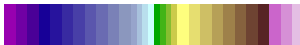 |
|
| precip_wiki_precip_mm🔻 |
schwarzwald_wiki_schwarzwald_cont🔻 |
shadowxfox_colombia🔻 |
| |
|
|
| template_wiki_1.02🔻 |
template_wiki_2.0🔻 |
tubs_nrwc🔻 |
| |
|
|
=======
>>>>>>> gh-pages